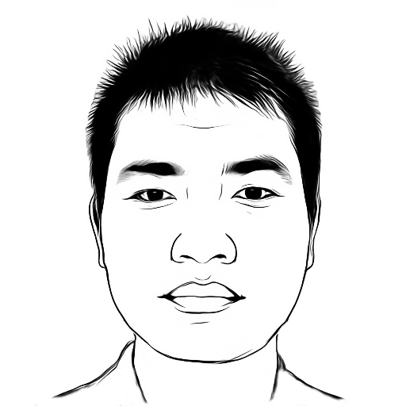

|
Menghan XIA
Ph.D. Student (since Fall 2017)
Department of Computer Science and Engineering
The Chinese University of Hong Kong
Shatin, N.T., Hong Kong
Email: menghanxyz@gmail.com
|

|
I am currently a second year Ph.D. student in Department of Computer Science and Engineering,
The Chinese University of Hong Kong (CUHK), supervised by Prof. Tien-Tsin Wong.
Before that, I received the B. Eng. degree in Remote Sensing Science and Technology and M. S. degree in Pattern Recognition and Intelligent System
from Wuhan University in 2014 and 2017 respectively, under the supervision of Prof. Jian Yao.
My research interest includes Computer Vision and Computer Graphics.
Publications
Conferences
-
Menghan Xia, Jian Yao, Renping Xie, Mi Zhang, Jinsheng Xiao.
"Color Consistency Correction Based on Remapping Optimization for Image Stitching",
International Conference on Computer Vision Workshop (ICCVW), Aug. 2017.
[Code]
-
Menghan Xia, Jian Yao, Xiaohu Lu, Li Li.
"Robust Alignment for UAV Images Based on Adaptive Adjustment",
International Workshop on Pattern Recognition in Remote Sensing (PRRS), Dec. 2016.
-
Menghan Xia, Jian Yao, Li Li, Renping Xie, Yahui Liu.
"Consistent Tonal Correction for Multi-View Remote Sensing Image Mosaicking",
XXIII ISPRS Congress (ISPRS-Annuals), Jul. 2016.
-
Kai Li, Jian Yao, Menghan Xia, Li Li.
"Joint Point and Line Segment Matching on Wide-Baseline Stereo Images",
IEEE Winter Conference on Applications of Computer Vision (WACV), Mar. 2016.
-
Menghan Xia, Jian Yao, Li Li, and Xiaohu Lu.
"Globally Consistent Alignment for Mosaicking Aerial Images",
IEEE International Conference on Image Processing (ICIP), Sept. 2015.
-
Mi Zhang, Jian Yao, Menghan Xia, Kai Li, Yi Zhang, and Yaping Liu.
"Line-Based Multiple Label Energy Optimization for Fisheye Image Rectification and Calibration",
IEEE Conference on Computer Vision and Pattern Recognition (CVPR), Apr. 2015.
Journals
-
Renping Xie, Menghan Xia, Jian Yao, Li Li.
"Guided color consistency optimization for image mosaicking",
ISPRS Journal of Photogrammetry and Remote Sensing , Jan. 2018.
-
Li Li, Jian Yao, Haoang Li, Menghan Xia, Wei Zhang.
"Optimal Seamline Detection in Dynamic Scenes via Graph Cuts for Image Mosaicking"
Machine Vision and Applications (MVA), Aug. 2017.
-
Menghan Xia, Jian Yao, Renping Xie, Li Li, Wei Zhang.
"Globally Consistent Alignment for Planar Mosaicking via Topology Analysis",
Pattern Recognition (PR), Jan. 2017.
[Code]
[Project]
-
Li Li, Jian Yao, Renping Xie, Menghan Xia, Wei Zhang.
"A Unified Framework for Street-View Panorama Stitching",
Sensors, Dec. 2016.
Professional Activities
-
Conference Review: CCCV(2017).
-
Journal Review: The Visual Computer(2018).
Selected Awards
- Outstanding Postgraduate Graduate of Wuhan University, 2017.
- First-class Scholarship of Wuhan University, 2016.
- Microsoft Aerial Survey Scholarship, Wuhan University, 2015.
- Excellent Postgraduate Freshman Scholarship of Wuhan University, 2014.
- Outstanding Undergraduate Graduate of Wuhan University, 2014.
- Excellent Undergraduate Students, Wuhan University, 2012.
- Excellent Undergraduate Students, Wuhan University, 2011.